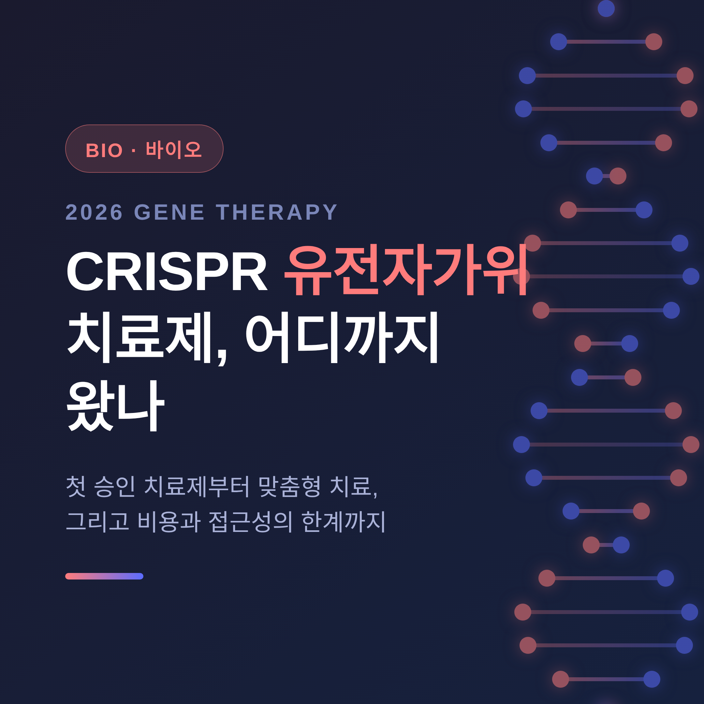
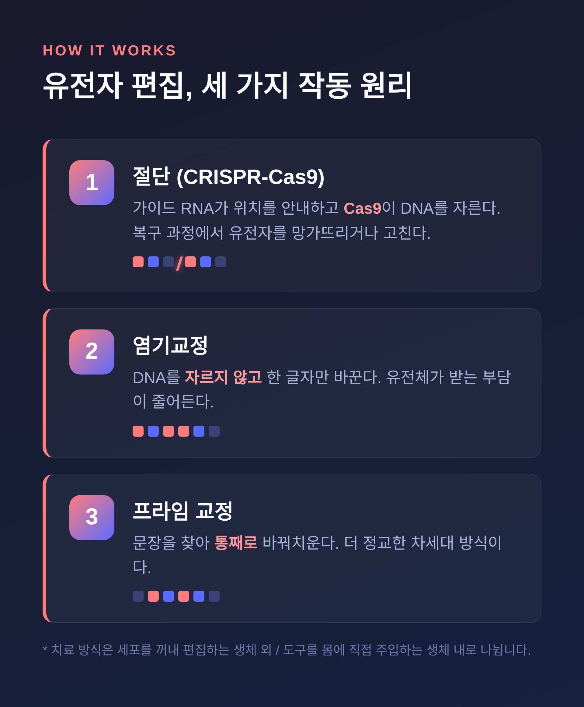
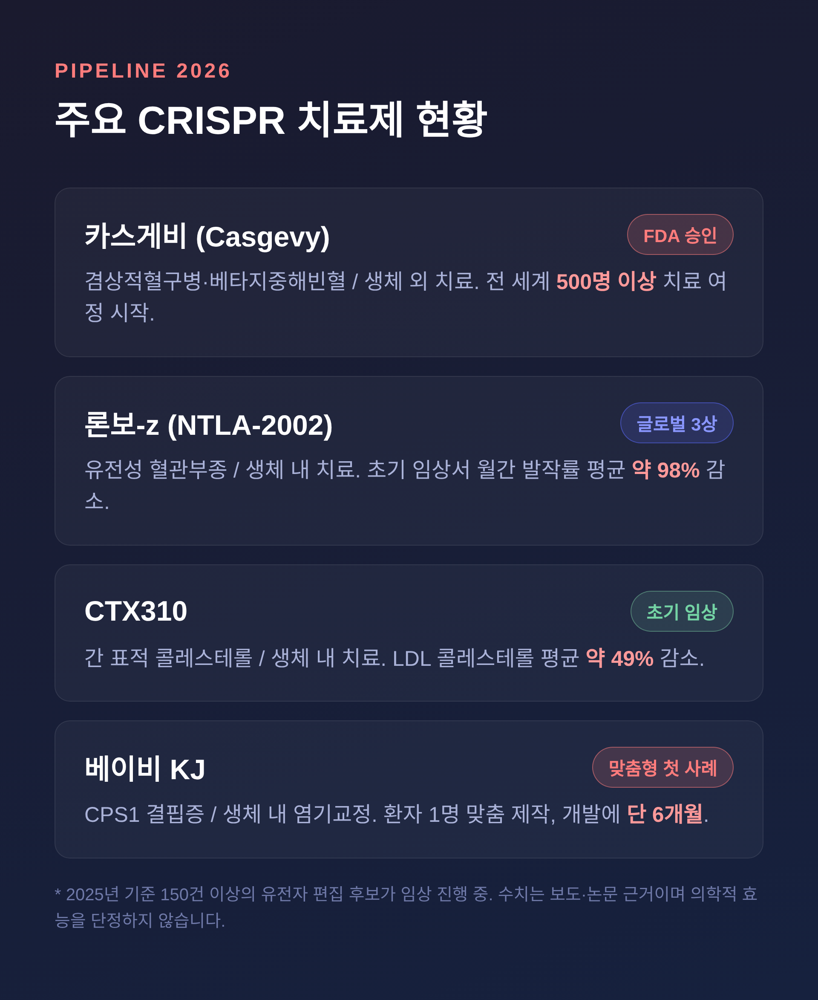

CRISPR 유전자가위 치료제 2026, 맞춤형 치료 어디까지 왔나
CRISPR 유전자가위 치료제가 2026년 현재 어디까지 왔는지 정리해 보겠습니다.
첫 승인 치료제부터 환자 한 명만을 위한 맞춤형 치료, 그리고 비용과 윤리 같은 한계까지 균형 있게 짚겠습니다.
결론부터 말씀드리면, 기술은 분명히 환자의 몸에 닿기 시작했습니다. 다만 모두에게 닿은 것은 아닙니다.

■ 유전자가위란 무엇인가
비유로 시작하겠습니다.
우리 몸의 DNA는 긴 문장으로 된 설계도입니다.
이 설계도에 오타가 있으면 병이 생깁니다.
CRISPR-Cas9은 그 오타를 찾아 잘라내는 가위입니다.
가이드 RNA가 정확한 위치를 안내하고, Cas9이라는 절단 효소가 DNA를 자릅니다.
세포가 그 자리를 복구하는 과정에서 유전자를 망가뜨리거나 고칩니다.
기술은 더 정교해졌습니다.
DNA를 자르지 않고 한 글자만 바꾸는 방식이 염기교정입니다.
문장을 찾아 통째로 바꿔치우는 방식이 프라임 교정입니다.
자르지 않으니 유전체가 받는 부담이 줄어듭니다.
치료 방식도 둘로 나뉩니다.
환자 세포를 몸 밖으로 꺼내 편집한 뒤 다시 넣는 방식이 생체 외 치료입니다.
편집 도구를 몸 안에 직접 주입하는 방식이 생체 내 치료입니다.

■ 첫 승인 치료제, 카스게비
세계 최초로 승인된 CRISPR 치료제는 카스게비(Casgevy)입니다.
버텍스와 크리스퍼 테라퓨틱스가 함께 개발했습니다.
12세 이상의 겸상적혈구병과 수혈의존성 베타지중해빈혈에 미국 FDA 승인을 받았습니다.
작동 방식은 생체 외 치료입니다.
환자의 조혈모세포를 꺼내 편집하고, 골수를 비우는 화학요법을 거친 뒤 다시 이식합니다.
태아 시절의 헤모글로빈을 다시 켜는 원리입니다.
성과는 쌓이고 있습니다.
2026년 기준 전 세계적으로 500명 이상이 치료 여정을 시작했습니다.
미국, 영국, EU를 비롯해 중동 여러 나라에서 승인됐습니다.
그러나 격차도 분명합니다.
승인국 안에서 치료 대상이 되는 환자는 약 6만 명으로 추정됩니다.
실제 치료를 시작한 500여 명과는 큰 차이가 있습니다.
인증 치료센터는 자료에 따라 수십 곳에서 75곳 수준으로 보고됩니다.

■ 환자 한 명을 위한 치료, 베이비 KJ
가장 인상적인 사례는 '베이비 KJ'입니다.
CPS1 결핍증이라는 초희귀 대사질환을 안고 태어난 아기입니다.
몸에 암모니아가 쌓이는 병으로, 영아기 사망률이 약 50%에 이른다고 보고됩니다.
연구팀은 이 아기만의 고유한 유전자 변이를 겨냥한 치료제를 만들었습니다.
아데닌 염기교정 기술을 썼고, 개발에는 단 6개월이 걸렸습니다.
2025년 2월 생후 6~7개월 무렵 첫 투여가 이뤄졌습니다.
이후 큰 부작용 없이 증상이 개선됐다고 NEJM에 보고됐습니다.
세계 최초의 개별 맞춤형 치료이자, 생체 내 염기교정 치료로 평가됩니다.
이 한 사례가 규제까지 움직였습니다.
2026년 2월 FDA는 '개연성 있는 기전' 프레임워크를 발표했습니다.
환자 수가 너무 적어 전통적 임상시험이 불가능할 때, 치료가 병의 근본 원인을 다룬다는 생물학적 근거를 입증하면 승인을 허용하는 길입니다.
다만 이 경로의 미래는 아직 불투명합니다.
프레임워크를 이끌던 두 FDA 책임자가 2026년 5월을 전후로 잇따라 떠났습니다.
"결과보다 기전을 앞세우면 실제로는 실패하는 치료가 승인될 수 있다"는 우려도 함께 제기됩니다.
■ 혈액질환을 넘어서
치료의 영역은 빠르게 넓어지고 있습니다.
유전성 혈관부종 치료제(NTLA-2002, 론보-z)는 한 번 투여로 발작을 막는 생체 내 치료입니다.
초기 임상에서 월간 발작률이 평균 98% 줄었고, 2026년 4월 글로벌 3상에서 긍정적 결과가 나왔습니다.
생체 내 유전자 편집의 글로벌 첫 성과로 꼽힙니다.
심혈관 영역도 움직입니다.
간을 표적으로 콜레스테롤을 낮추는 치료제(CTX310)는 초기 임상에서 LDL 콜레스테롤을 평균 49% 낮췄습니다.
전체적으로 2025년 기준 150건 이상의 유전자 편집 치료 후보가 활발히 임상 중입니다.
국내 동향도 있습니다.
툴젠은 샤르코마리투스병 등을 겨냥한 치료제를 개발 중이며, 생체 내 교정 치료로 방향을 넓히고 있습니다.
다만 국내 파이프라인은 단계 변동이 잦아, 임상 개시 목표가 곧 성공을 뜻하지는 않습니다.
■ 남은 한계, 비용과 접근성
희망만 이야기하면 균형이 깨집니다.
가장 큰 벽은 비용입니다.
카스게비의 가격은 약 220만 달러, 우리 돈으로 30억 원 안팎입니다.
환자마다 맞춤 제조해야 하는 복잡한 과정이 고비용의 원인입니다.
접근성도 과제입니다.
적격 환자 6만 명 가운데 실제 치료는 500여 명에 그칩니다.
미국 정부가 성과 기반 지불 모델을 시도하고 있지만, 격차는 여전히 큽니다.
안전성도 아직 완벽하지는 않습니다.
오프타겟 편집과 모자이크 현상이 지적되고, 장기 추적 데이터도 충분치 않습니다.
투여 전 골수를 비우는 화학요법은 환자에게 적지 않은 부담을 줍니다.
초고가 치료의 형평성 문제 역시 시급한 윤리적 과제로 남아 있습니다.
다만 개선의 방향은 보입니다.
골수를 비우지 않고 몸 안에서 직접 편집하는 차세대 기술이 개발되고 있습니다.
끝으로 한 마디만 더 드리겠습니다.
예전엔 유전병은 안고 살아야 하는 운명이었습니다.
지금은 그 설계도의 오타를 고쳐보려는 시도가 환자에게 닿고 있습니다.
다만 기술의 성숙과 모두의 접근은 다른 문제입니다.
— "고칠 수 있다"와 "닿을 수 있다" 사이의 거리를, 2026년의 우리는 이제 막 좁히기 시작했습니다.